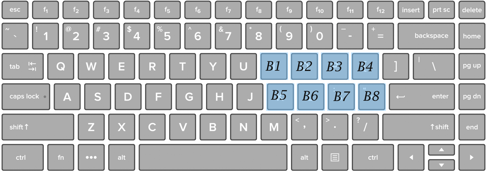

What is it?
Tabgrid~ is a sound effect and sound bed playback engine for quickly and easily loading multiple sound files to play during Tabletop Roleplaying Games. All you need to do is upload sound files from your machine to the grid and you're all set! Add sounds for when your archer fires a magical arrow, for that big monster in the dungeon, or even an ambient track to set the scene while you describe the surroundings.
Using Pure Data
The project is split into two components: The parent SFXGrid patch and the child Tabgrid~ patch. To begin using the patch, open the SFXGrid file and input the names of the files you would like to play. You can either press the buttons in the Tabgrid~ objects, or you can press the keyboard keys to play their assigned sounds. In the default settings, the eight keys are i, o, p, [, k, l, ";", and '.
Try it for yourself!
Besides the master patch, there are also 5 demo patches with sound effects for you to use right out of the box! Feel free to add your own sound effects as you see fit. The packages were made for my playtest, and the names of each folder are holdovers from that playtest.